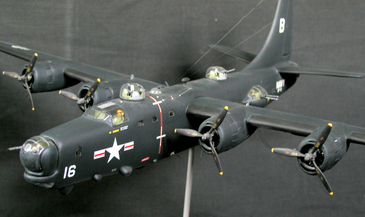
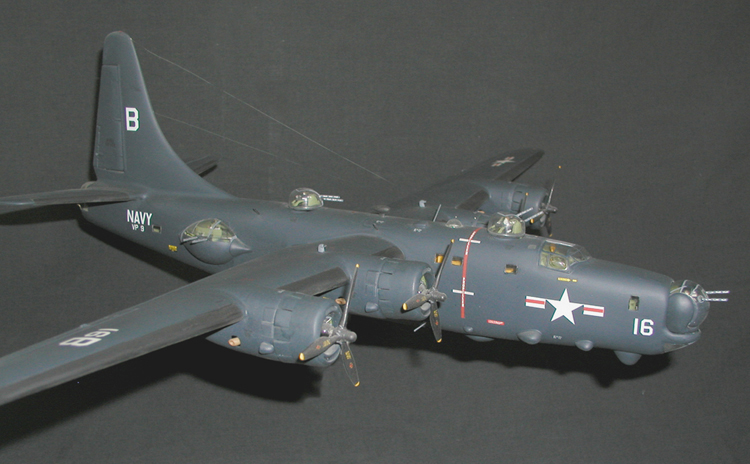
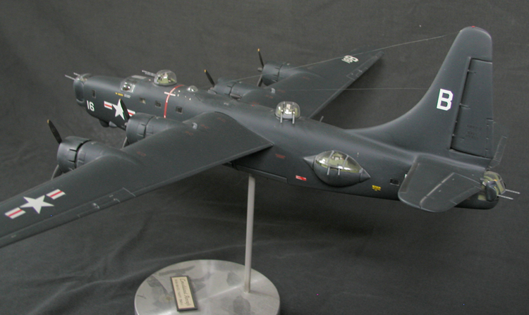

MODEL DETAILS—This PB4Y-2 model is a Koster Aero Enterprises vacu-form modification of Monogram's 1:48th scale B-24J Liberator. All that remain of the original kit are the cockpit decking, bulk-heads, bomb bay, and wing planform. Cockpit and engines have been detailed. Bomb bay doors, engine electrical harness, engine nacelle vents, and de-icer boots are scrap-built. This particular Koster conversion was well received (see also the RY-3 below) and I think It turned out quite well. The only issue that I had with this particular conversion concerned the precise blending of the engine nacelles into the stock Monogram wing planform. This model has also received a bit of recognition from the judges:
1995: Honorable Mention (Museum of Flight/NW Scale Modelers, Seattle, WA);
2002: 3rd Place (Locon, IPMS Fort Crook/Omaha, NE);
2003: 3rd Place (Hobby Town, Sioux Falls, SD).
The PB4Y-2 patrol bomber was the second modification of the basic B-24 (PB4Y-1) Liberator airframe ordered by the Navy. The markings on this Privateer indicate that it operated with VP-9 ("Golden Eagles") in Korea, circa 1951. During the conflict, P4Y-2 Privateers (Fireflies) dropped parachute flares to illuminate targets which would then be attacked by orbiting nightfighters.
Privateers first flew in 1943 and were retired from naval inventory in 1954. Many remained flying in Coast Guard livery (P4Y-2G) until the early 1960's, while a few modified "Super-Privateers" fly as slurry-bombers in the US and Canada each summer fighting forest fires.



Reprinted with permission from BatHead